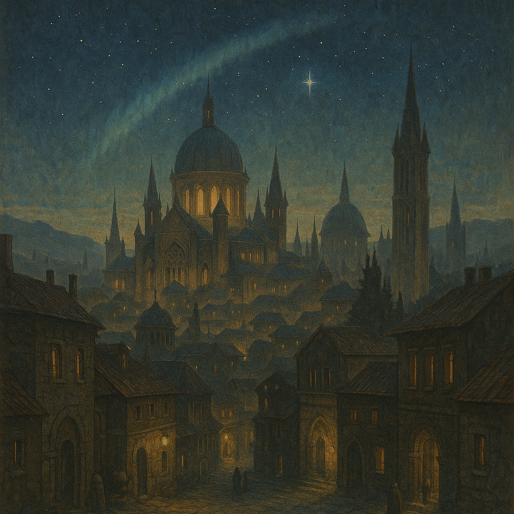
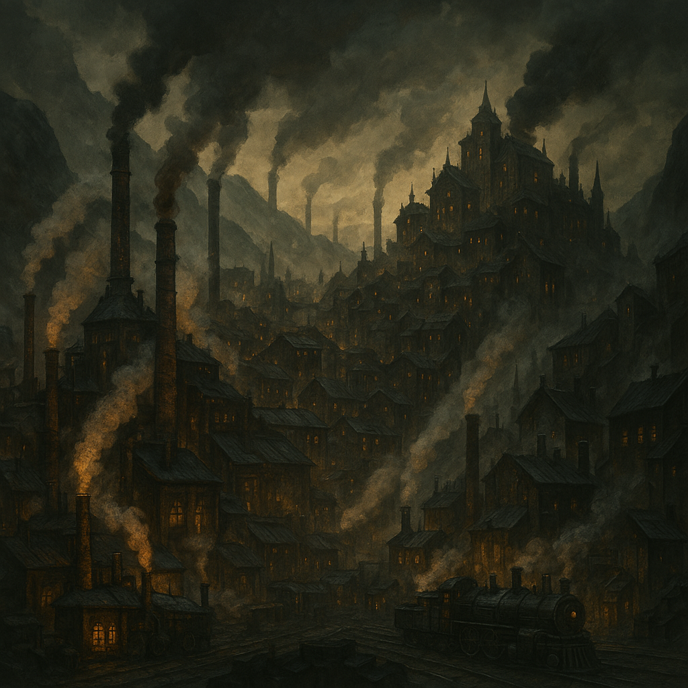
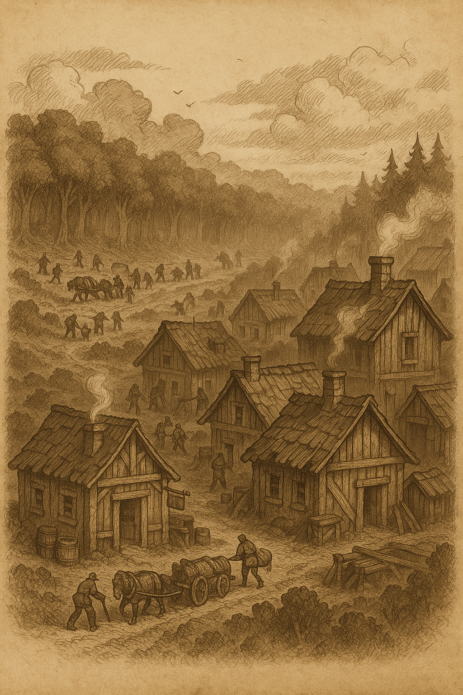
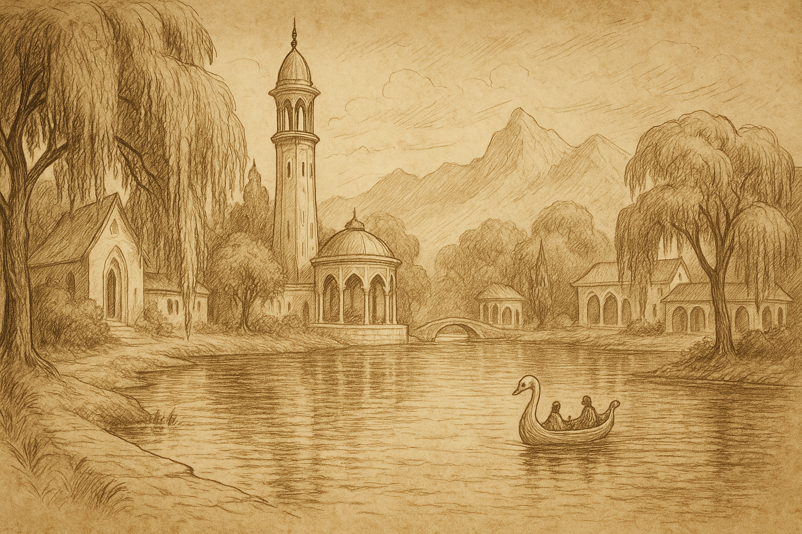

Elanora — The City of Stars
We are delighted to welcome you to Elanora, capital of the Starling District and one of the Empire’s most storied frontier cities. Known as “The City of Stars,” Elanora is home to luminous architecture, observatories, and the esteemed Royal Astral College. Upon arrival, you may notice that the city is quiet during the day and alive during the night. That's because the city has an unusual magical property that changes the cicadian rhythm of everyone to wake during night. During night time, you can see the sky like no one else! Beuatiful aurora's, stars, and shooting stars fill the starry arena! It is here that the education for handling this type of magic and infuisng them with items comes from! This city is mostly filled with humans with a minority of high elves and dwarves.
As a visitor, you will find both wonder and duty in equal measure. Be sure to come to Elanora to check out the midnight market and museams! Make sure to bring a magic item with you on your way back!
Velevyn - City of Industry
Velevyn is a roaring furnace tucked deep within the heart of the Western Ironspine Mountains. Its streets tremble with the rhythmic hammering of forges, and its sky is often veiled in a permanent haze of soot and steam. This city takes the magic from the farms and turns them into industry-standard magic that the people in Elanora can later through art and precision infuse them into items.
Velevyn supplies arcane-mechanical constructs, enchanted war gear, and train-bound steam haulers to outposts across the realm. The city's lower tiers house vast foundries and gearworks run by trade barons and state-backed artificer guilds. Higher up, on the cliffs of Smogreach, live the elite — inventors, merchants, and bureaucrats who manage the labor below. This place is tyically filled with Dwarves with a few humans and no documented high elves.
The Monarch's Forest
The Monarch’s Forest is a vast and ancient expanse of towering green trees. Some of its trees grow taller than towers. Some have their bark veined with soft-glowing sap some say can hum in silence. Though revered as the Empire’s richest source of raw magic, few truly understand the forest.

Synclair
Nestled against the southern edge of Monarch’s Forest, Synclair is a bustling town. Traders call it “The Last Town Before the Trees". The forest is a generous provider for the citizens of Velevyn.
Every morning, tap crews and resin harvesters head into designated extraction zones just beyond the tree line, returning before dusk with carts of shimmering sap and arcane-infused lumber. Locals speak proudly of their work supplying magical components to the District because all the magic that makes Starlings the Starlings come from the Forest.
Lake Town
Cradled along the glassy shores of Lake Enareth, Lake Town is a place of stillness and elegant age. Pale willow trees drape over the water's edge, and white swan-shaped boats glide soundlessly between marble piers. The town is inhabited mostly by high elves.
Lake Town is known as the ancestral seat of the Elven Queen’s bloodline. The central spire, Thalirien’s Mirror, rises like a silver flute from the water. its mirrored dome is said to show possibilities in its reflections. Despite its quiet and peaceful nature, royal emissaries pass through its halls, and ancient treaties written in starlight are stored beneath its library. To the elves, Lake Town is their root.
 << RETURN TO UTILITYYour journey begins here. May your path be guided by the stars above.